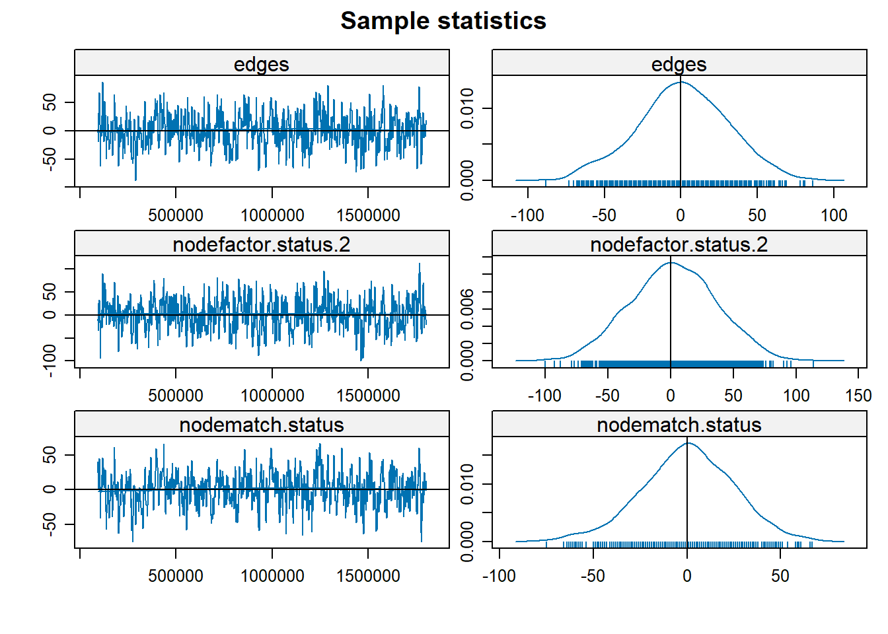
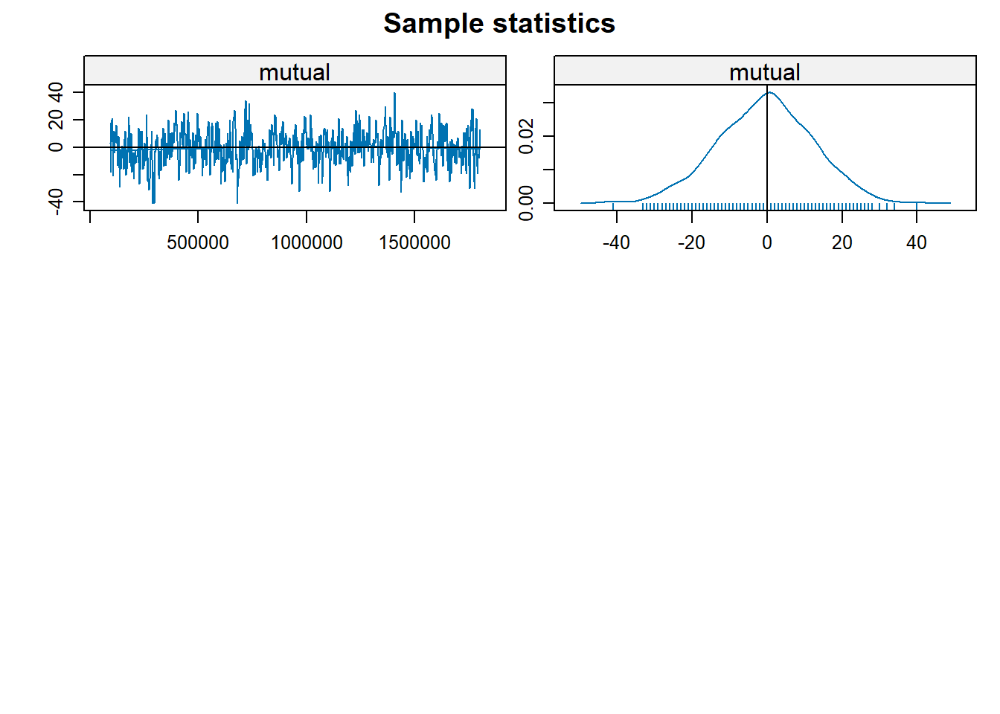

Statistical Models of Networks III
In the previous handout we saw how to fit expoential random graph models (ergms) for simple undirected networks. As noted, these models are useful for multivariate null hypothesis testing using network data, answering questions of the form: Is this network statistic larger or smaller than I would expect by chance, after conditioning (e.g., “controling for”) these other network statistics?
The ergm modeling framework is pretty flexible, allowing you to test for the statistical significance of any network statistic you can imagine while holding constant a bunch of other ones.
Here we will see how to extend the ergm framework to other types of directed, two-mode, and temporal networks.
ERGMs in Directed Networks
The extension to the directed case is the most straightforward. Let’s load up some relevant data, in the form Lazega’s Law Firm advice network:
The key network statistic that we need to think about in the directed case is reciprocity or mutuality, namely, the fact that in the directed case, it is possible that I send a tie to you but you don’t send it back. In this advice network case this would happen if I seek advice from you, but you don’t seek advice from me.
In an ergm, we use the mutual term to condition on the number of dyads featuring arcs going on both directions (e.g., from \(i\) to \(j\) and from \(j\) to \(i\)):
Call:
ergm(formula = n ~ edges + mutual, estimate = "MLE")
Monte Carlo Maximum Likelihood Results:
Estimate Std. Error MCMC % z value Pr(>|z|)
edges -1.86011 0.05042 0 -36.89 <1e-04 ***
mutual 1.47000 0.11877 0 12.38 <1e-04 ***
---
Signif. codes: 0 '***' 0.001 '**' 0.01 '*' 0.05 '.' 0.1 ' ' 1
Null Deviance: 6504 on 4692 degrees of freedom
Residual Deviance: 4338 on 4690 degrees of freedom
AIC: 4342 BIC: 4355 (Smaller is better. MC Std. Err. = 1.357)The reciprocity parameter is positive and statistically significant (\(\theta_{mutual} = 1.43, p < 0.01\)) suggesting a strong tendency for reciprocity in this network; people who seek advice from a person tend to have that person also seek advice from them.
We can also incorporate homophily based non attributes into our analysis of reciprocity. That is, we can test hypotheses of the form: Is mutuality weaker or stronger for dyads that match on a certain characteristic?
For instance, we know that the friendship and advice networks in this Law Firm is strongly structured by status (Partners versus Associates) so we should expect there to be more reciprocity among high-status connected pairs (e.g., partner-partner) than among low-status connected pairs.
We can test this hypothesis as follows:
Call:
ergm(formula = n ~ edges + mutual(same = "status", diff = TRUE),
estimate = "MLE")
Monte Carlo Maximum Likelihood Results:
Estimate Std. Error MCMC % z value Pr(>|z|)
edges -1.81901 0.04544 0 -40.034 <1e-04 ***
mutual.same.status.1 2.39408 0.13454 0 17.795 <1e-04 ***
mutual.same.status.2 1.27947 0.18561 0 6.893 <1e-04 ***
---
Signif. codes: 0 '***' 0.001 '**' 0.01 '*' 0.05 '.' 0.1 ' ' 1
Null Deviance: 6504 on 4692 degrees of freedom
Residual Deviance: 4222 on 4689 degrees of freedom
AIC: 4228 BIC: 4247 (Smaller is better. MC Std. Err. = 1.352)And indeed, we find that reciprocity among partners is almost twice as strong compared to advice reciprocity among associates.
However, we also know from our previous analysis that there are probably activity (degree) differences based on status; we also know that there will likely be homophily also based on status. So we need to adjust for both those tendencies before concluding anything:
m3 <- ergm(n ~ edges + nodefactor("status")
+ nodematch("status")
+ mutual(same = "status", diff = TRUE),
estimate = "MLE")
summary(m3)Call:
ergm(formula = n ~ edges + nodefactor("status") + nodematch("status") +
mutual(same = "status", diff = TRUE), estimate = "MLE")
Monte Carlo Maximum Likelihood Results:
Estimate Std. Error MCMC % z value Pr(>|z|)
edges -1.71052 0.09452 0 -18.097 < 1e-04 ***
nodefactor.status.2 -0.26136 0.06904 0 -3.786 0.000153 ***
nodematch.status 0.34671 0.09482 0 3.657 0.000256 ***
mutual.same.status.1 1.60813 0.18841 0 8.535 < 1e-04 ***
mutual.same.status.2 1.39337 0.24506 0 5.686 < 1e-04 ***
---
Signif. codes: 0 '***' 0.001 '**' 0.01 '*' 0.05 '.' 0.1 ' ' 1
Null Deviance: 6504 on 4692 degrees of freedom
Residual Deviance: 4192 on 4687 degrees of freedom
AIC: 4202 BIC: 4235 (Smaller is better. MC Std. Err. = 0.6005)And indeed, after adjusting for activity differences and homophily tendencies based on status, there is no statistically discernible differences in mutuality among connected pairs based on that characteristic. That means a more parsimonious model is just:
m4 <- ergm(n ~ edges + nodefactor("status")
+ nodematch("status")
+ mutual,
estimate = "MLE")
summary(m4)Call:
ergm(formula = n ~ edges + nodefactor("status") + nodematch("status") +
mutual, estimate = "MLE")
Monte Carlo Maximum Likelihood Results:
Estimate Std. Error MCMC % z value Pr(>|z|)
edges -1.89809 0.08023 0 -23.657 <1e-04 ***
nodefactor.status.2 -0.31118 0.04408 0 -7.060 <1e-04 ***
nodematch.status 0.65728 0.07117 0 9.235 <1e-04 ***
mutual 1.30737 0.12286 0 10.641 <1e-04 ***
---
Signif. codes: 0 '***' 0.001 '**' 0.01 '*' 0.05 '.' 0.1 ' ' 1
Null Deviance: 6504 on 4692 degrees of freedom
Residual Deviance: 4186 on 4688 degrees of freedom
AIC: 4194 BIC: 4220 (Smaller is better. MC Std. Err. = 1.756)Note that because of the presence of the mutual term (which makes the model “dyad dependent”), these models have to be estimated via Markov Chain Monte Carlo (MCMC) sampling.
We can also check to see if the dyad dependent term in the model is behaving well like this:


Sample statistics summary:
Iterations = 92160:1800192
Thinning interval = 2048
Number of chains = 1
Sample size per chain = 835
1. Empirical mean and standard deviation for each variable,
plus standard error of the mean:
Mean SD Naive SE Time-series SE
edges 1.1868 29.44 1.0187 1.757
nodefactor.status.2 2.2168 34.19 1.1831 1.947
nodematch.status 0.3497 24.30 0.8409 1.655
mutual -0.5006 12.49 0.4323 0.748
2. Quantiles for each variable:
2.5% 25% 50% 75% 97.5%
edges -61.00 -17 1 21.5 58.15
nodefactor.status.2 -65.15 -21 2 25.0 68.15
nodematch.status -49.00 -15 1 17.0 46.00
mutual -25.00 -9 0 8.0 23.00
Are sample statistics significantly different from observed?
edges nodefactor.status.2 nodematch.status mutual (Omni)
diff. 1.1868263 2.2167665 0.3497006 -0.5005988 NA
test stat. 0.6753950 1.1382734 0.2113228 -0.6692302 7.7973485
P-val. 0.4994249 0.2550063 0.8326354 0.5033487 0.1048951
Sample statistics cross-correlations:
edges nodefactor.status.2 nodematch.status mutual
edges 1.0000000 0.7323557 0.8023251 0.7376169
nodefactor.status.2 0.7323557 1.0000000 0.5263626 0.4578127
nodematch.status 0.8023251 0.5263626 1.0000000 0.6762448
mutual 0.7376169 0.4578127 0.6762448 1.0000000
Sample statistics auto-correlation:
Chain 1
edges nodefactor.status.2 nodematch.status mutual
Lag 0 1.000000000 1.00000000 1.00000000 1.00000000
Lag 2048 0.496465647 0.46035175 0.58918195 0.49872563
Lag 4096 0.235575255 0.21095153 0.32475265 0.26117034
Lag 6144 0.099324981 0.13105742 0.16444158 0.14159482
Lag 8192 0.036901422 0.11141262 0.09357289 0.08694538
Lag 10240 0.003585274 0.08296329 0.01469678 0.01982386
Sample statistics burn-in diagnostic (Geweke):
Chain 1
Fraction in 1st window = 0.1
Fraction in 2nd window = 0.5
edges nodefactor.status.2 nodematch.status mutual
-0.2059735 0.3200419 -0.5951234 -1.3144731
Individual P-values (lower = worse):
edges nodefactor.status.2 nodematch.status mutual
0.8368116 0.7489366 0.5517610 0.1886871
Joint P-value (lower = worse): 0.4517974
Note: MCMC diagnostics shown here are from the last round of
simulation, prior to computation of final parameter estimates.
Because the final estimates are refinements of those used for this
simulation run, these diagnostics may understate model performance.
To directly assess the performance of the final model on in-model
statistics, please use the GOF command: gof(ergmFitObject,
GOF=~model).What we want to see in the plot on the right is random fluctuations around a flat line (where the x-axis is the round of simulation). Any trends or cycles are bad news. In this case, things seem to be good. On the right-hand plot we want to see a nice bell-shaped distribution centered at zero (where zero is the parameter estimate). Any lopsided distribution is bad news, but here we seem to be in good shape.
However, the mcmc.diagonostics just tells you the model converged without any issues. It doesn’t tell you whether it is a good model in terms of reproducing the core global properties of the network. For that we still have to use the gof function: